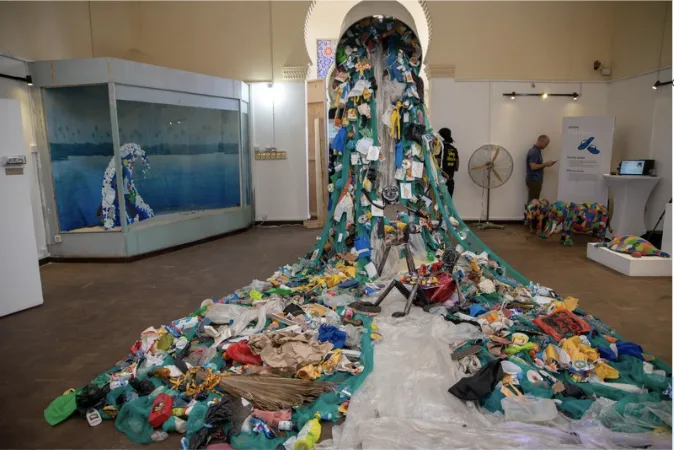
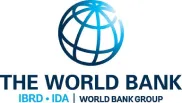
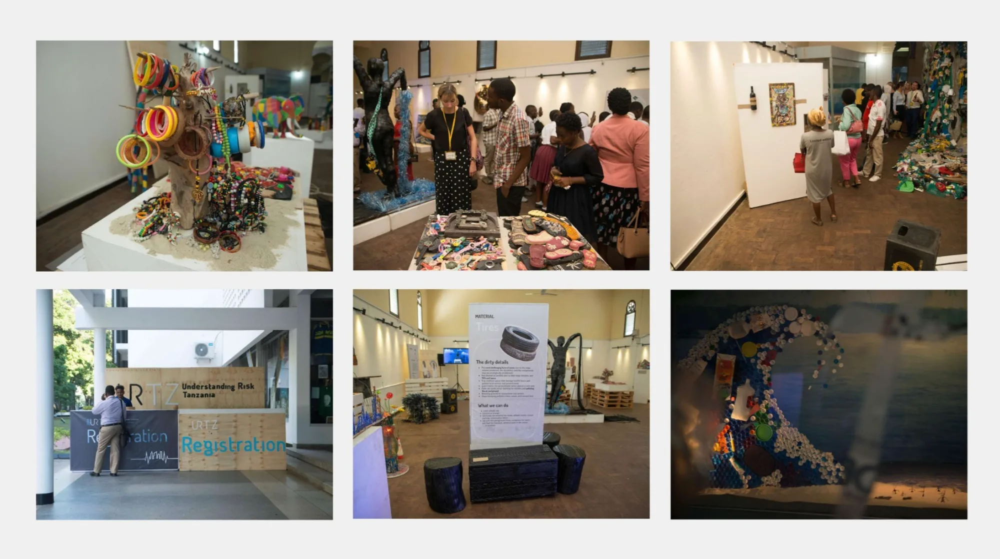
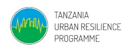

Studio 19 was the creative partner on the World Bank's Tanzania Urban Resilience Programme Zero Waste initiative: a public engagement campaign that reframed solid waste from a civic problem into a circular economy opportunity, and waste workers from a stigma into a dignified livelihood.

CLIENT
World Bank ↗PROGRAMME
TURP / URTZ 2019
OUR ROLE
Creative Partner & SBC Campaign
LOCATION
Dar es Salaam
Dar es Salaam floods regularly, and solid waste blocking drainage networks is one of the primary causes. Yet public understanding of this link was low, waste work carried deep social stigma, and circular economy thinking had no visible foothold in the city's public discourse.
The World Bank's TURP programme needed a campaign that could shift behaviour and perception simultaneously: making waste segregation feel meaningful, and making the people who do this work feel valued.
We developed public communications focused on separation at source, recycling, and responsible consumption, framing circular economy practices as practical and immediate, not abstract or technical.
A month-long exhibition at the National Museum featuring works by 30+ local artists who transformed PET bottles, tires, glass, and flip-flops into art. The exhibition made the case for a circular economy through lived experience and creativity rather than policy language.
Select artworks were featured across the Dar es Salaam BRT bus system, taking the exhibition into the daily commute of over 60,000 passengers and embedding the campaign's message into the city's busiest public spaces.
We ran workshops with youth on production life cycles and circularity concepts, and produced human-interest storytelling and data visualisation of waste impacts. The project concluded with a Zero-Waste Event Manual as a replicable guide for future sustainable events.
"Creating Resilience," National Museum, Dar es Salaam.

URTZ 2019 conference & exhibition moments.
Via the BRT "moving exhibition" across Dar es Salaam's busiest transit routes.
Transforming PET bottles, tires, glass, and flip-flops into art at the National Museum.
Tanzania's first major zero-waste international conference, setting a replicable precedent.
CAMPAIGN PARTNERS

Tell us your objective, audience, and context. We'll propose a field-ready strategy built around real behaviour, not assumptions.